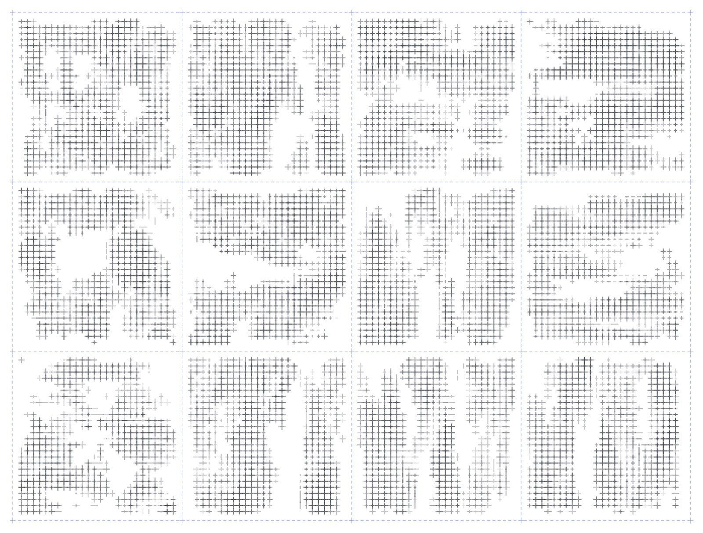

오디세이아 10권 · 아이올로스의 바람
키르케 물격자
38.5 cm(퓌구시온) 십자 격자는 제자리에 두고, 바람이 지나갈 때 빛과 빈 공간만 물처럼 흐르게 한 설계 연구입니다. 평면 12장에서 출발해 같은 규칙으로 정육면체 12개를 세웠습니다.

평면 · 브라우저에서 실시간 계산물격자 평면 12장
바람을 재생하면 12칸의 빈 공간이 열리고 닫히며 흘러갑니다.
 입체 · 미리 계산한 1,200개
입체 · 미리 계산한 1,200개평면을 세운 정육면체
평면과 같은 순간, 정육면체 안의 빈 공간이 함께 흐릅니다. 평면과 나란히 볼 수 있습니다.
 한 칸 · 조절판
한 칸 · 조절판물격자 한 칸
장면, 바람, 빈 공간을 미는 바람의 방향, 겹 수, 물결을 직접 바꿔 봅니다.
한 칸 = 10 × 10 m (38.5 cm × 26), 십자 26 × 26개, 5겹. 열 = 바람 궤도 51 · 74 · 77 · 92. 노이즈는 Ken Perlin 개선판(2002). 참고: nD_Rise design studio / RMIT Architecture 002 영상 00:13의 평면 12칸.